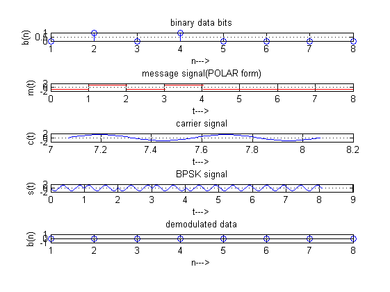

clc;
clear all;
close all;
Tb=1;
t=0:Tb/100:Tb;
fc=2;
c=sqrt(2/Tb)*sin(2*pi*fc*t);
N=8;
m=rand(1,N);
t1=0;
t2=Tb
for i=1:N
t=[t1:.01:t2]
if m(i)>0.5
m(i)=1;
m_s=ones(1,length(t));
else
m(i)=0;
m_s=-1*ones(1,length(t));
end
message(i,:)=m_s;
bpsk_sig(i,:)=c.*m_s;
subplot(5,1,2);
axis([0 N -2 2]);
plot(t,message(i,:),'r');
title('message signal(POLAR form)');
xlabel('t--->');
ylabel('m(t)');
grid on;
hold on;
subplot(5,1,4);plot(t,bpsk_sig(i,:));
title('BPSK signal');
xlabel('t--->'); ylabel('s(t)');
grid on; hold on;
t1=t1+1.01; t2=t2+1.01;
end
hold off
subplot(5,1,1); stem(m);
title('binary data bits');
xlabel('n--->'); ylabel('b(n)');
grid on;
subplot(5,1,3); plot(t,c);
title('carrier signal'); xlabel('t--->'); ylabel('c(t)');
grid on;
t1=0;
t2=Tb
fori=1:N
t=[t1:.01:t2]
x=sum(c.*bpsk_sig(i,:));
if x>0
demod(i)=1;
else
demod(i)=0;
end
t1=t1+1.01;
t2=t2+1.01;
subplot(5,1,5);
stem(demod);
title('demodulated data');
xlabel('n--->');
ylabel('b(n)');
grid on;
t2 =
1
t =
Columns 1 through 7
0 0.0100 0.0200 0.0300 0.0400 0.0500 0.0600
Columns 8 through 14
0.0700 0.0800 0.0900 0.1000 0.1100 0.1200 0.1300
Columns 15 through 21
0.1400 0.1500 0.1600 0.1700 0.1800 0.1900 0.2000
Columns 22 through 28
0.2100 0.2200 0.2300 0.2400 0.2500 0.2600 0.2700
Columns 29 through 35
0.2800 0.2900 0.3000 0.3100 0.3200 0.3300 0.3400
Columns 36 through 42
0.3500 0.3600 0.3700 0.3800 0.3900 0.4000 0.4100
Columns 43 through 49
0.4200 0.4300 0.4400 0.4500 0.4600 0.4700 0.4800
Columns 50 through 56
0.4900 0.5000 0.5100 0.5200 0.5300 0.5400 0.5500
Columns 57 through 63
0.5600 0.5700 0.5800 0.5900 0.6000 0.6100 0.6200
Columns 64 through 70
0.6300 0.6400 0.6500 0.6600 0.6700 0.6800 0.6900
Columns 71 through 77
0.7000 0.7100 0.7200 0.7300 0.7400 0.7500 0.7600
Columns 78 through 84
0.7700 0.7800 0.7900 0.8000 0.8100 0.8200 0.8300
Columns 85 through 91
0.8400 0.8500 0.8600 0.8700 0.8800 0.8900 0.9000
Columns 92 through 98
0.9100 0.9200 0.9300 0.9400 0.9500 0.9600 0.9700
Columns 99 through 101
0.9800 0.9900 1.0000
t =
Columns 1 through 7
1.0100 1.0200 1.0300 1.0400 1.0500 1.0600 1.0700
Columns 8 through 14
1.0800 1.0900 1.1000 1.1100 1.1200 1.1300 1.1400
Columns 15 through 21
1.1500 1.1600 1.1700 1.1800 1.1900 1.2000 1.2100
Columns 22 through 28
1.2200 1.2300 1.2400 1.2500 1.2600 1.2700 1.2800
Columns 29 through 35
1.2900 1.3000 1.3100 1.3200 1.3300 1.3400 1.3500
Columns 36 through 42
1.3600 1.3700 1.3800 1.3900 1.4000 1.4100 1.4200
Columns 43 through 49
1.4300 1.4400 1.4500 1.4600 1.4700 1.4800 1.4900
Columns 50 through 56
1.5000 1.5100 1.5200 1.5300 1.5400 1.5500 1.5600
Columns 57 through 63
1.5700 1.5800 1.5900 1.6000 1.6100 1.6200 1.6300
Columns 64 through 70
1.6400 1.6500 1.6600 1.6700 1.6800 1.6900 1.7000
Columns 71 through 77
1.7100 1.7200 1.7300 1.7400 1.7500 1.7600 1.7700
Columns 78 through 84
1.7800 1.7900 1.8000 1.8100 1.8200 1.8300 1.8400
Columns 85 through 91
1.8500 1.8600 1.8700 1.8800 1.8900 1.9000 1.9100
Columns 92 through 98
1.9200 1.9300 1.9400 1.9500 1.9600 1.9700 1.9800
Columns 99 through 101
1.9900 2.0000 2.0100
t =
Columns 1 through 7
2.0200 2.0300 2.0400 2.0500 2.0600 2.0700 2.0800
Columns 8 through 14
2.0900 2.1000 2.1100 2.1200 2.1300 2.1400 2.1500
Columns 15 through 21
2.1600 2.1700 2.1800 2.1900 2.2000 2.2100 2.2200
Columns 22 through 28
2.2300 2.2400 2.2500 2.2600 2.2700 2.2800 2.2900
Columns 29 through 35
2.3000 2.3100 2.3200 2.3300 2.3400 2.3500 2.3600
Columns 36 through 42
2.3700 2.3800 2.3900 2.4000 2.4100 2.4200 2.4300
Columns 43 through 49
2.4400 2.4500 2.4600 2.4700 2.4800 2.4900 2.5000
Columns 50 through 56
2.5100 2.5200 2.5300 2.5400 2.5500 2.5600 2.5700
Columns 57 through 63
2.5800 2.5900 2.6000 2.6100 2.6200 2.6300 2.6400
Columns 64 through 70
2.6500 2.6600 2.6700 2.6800 2.6900 2.7000 2.7100
Columns 71 through 77
2.7200 2.7300 2.7400 2.7500 2.7600 2.7700 2.7800
Columns 78 through 84
2.7900 2.8000 2.8100 2.8200 2.8300 2.8400 2.8500
Columns 85 through 91
2.8600 2.8700 2.8800 2.8900 2.9000 2.9100 2.9200
Columns 92 through 98
2.9300 2.9400 2.9500 2.9600 2.9700 2.9800 2.9900
Columns 99 through 101
3.0000 3.0100 3.0200
t =
Columns 1 through 7
3.0300 3.0400 3.0500 3.0600 3.0700 3.0800 3.0900
Columns 8 through 14
3.1000 3.1100 3.1200 3.1300 3.1400 3.1500 3.1600
Columns 15 through 21
3.1700 3.1800 3.1900 3.2000 3.2100 3.2200 3.2300
Columns 22 through 28
3.2400 3.2500 3.2600 3.2700 3.2800 3.2900 3.3000
Columns 29 through 35
3.3100 3.3200 3.3300 3.3400 3.3500 3.3600 3.3700
Columns 36 through 42
3.3800 3.3900 3.4000 3.4100 3.4200 3.4300 3.4400
Columns 43 through 49
3.4500 3.4600 3.4700 3.4800 3.4900 3.5000 3.5100
Columns 50 through 56
3.5200 3.5300 3.5400 3.5500 3.5600 3.5700 3.5800
Columns 57 through 63
3.5900 3.6000 3.6100 3.6200 3.6300 3.6400 3.6500
Columns 64 through 70
3.6600 3.6700 3.6800 3.6900 3.7000 3.7100 3.7200
Columns 71 through 77
3.7300 3.7400 3.7500 3.7600 3.7700 3.7800 3.7900
Columns 78 through 84
3.8000 3.8100 3.8200 3.8300 3.8400 3.8500 3.8600
Columns 85 through 91
3.8700 3.8800 3.8900 3.9000 3.9100 3.9200 3.9300
Columns 92 through 98
3.9400 3.9500 3.9600 3.9700 3.9800 3.9900 4.0000
Columns 99 through 101
4.0100 4.0200 4.0300
t =
Columns 1 through 7
4.0400 4.0500 4.0600 4.0700 4.0800 4.0900 4.1000
Columns 8 through 14
4.1100 4.1200 4.1300 4.1400 4.1500 4.1600 4.1700
Columns 15 through 21
4.1800 4.1900 4.2000 4.2100 4.2200 4.2300 4.2400
Columns 22 through 28
4.2500 4.2600 4.2700 4.2800 4.2900 4.3000 4.3100
Columns 29 through 35
4.3200 4.3300 4.3400 4.3500 4.3600 4.3700 4.3800
Columns 36 through 42
4.3900 4.4000 4.4100 4.4200 4.4300 4.4400 4.4500
Columns 43 through 49
4.4600 4.4700 4.4800 4.4900 4.5000 4.5100 4.5200
Columns 50 through 56
4.5300 4.5400 4.5500 4.5600 4.5700 4.5800 4.5900
Columns 57 through 63
4.6000 4.6100 4.6200 4.6300 4.6400 4.6500 4.6600
Columns 64 through 70
4.6700 4.6800 4.6900 4.7000 4.7100 4.7200 4.7300
Columns 71 through 77
4.7400 4.7500 4.7600 4.7700 4.7800 4.7900 4.8000
Columns 78 through 84
4.8100 4.8200 4.8300 4.8400 4.8500 4.8600 4.8700
Columns 85 through 91
4.8800 4.8900 4.9000 4.9100 4.9200 4.9300 4.9400
Columns 92 through 98
4.9500 4.9600 4.9700 4.9800 4.9900 5.0000 5.0100
Columns 99 through 101
5.0200 5.0300 5.0400
t =
Columns 1 through 7
5.0500 5.0600 5.0700 5.0800 5.0900 5.1000 5.1100
Columns 8 through 14
5.1200 5.1300 5.1400 5.1500 5.1600 5.1700 5.1800
Columns 15 through 21
5.1900 5.2000 5.2100 5.2200 5.2300 5.2400 5.2500
Columns 22 through 28
5.2600 5.2700 5.2800 5.2900 5.3000 5.3100 5.3200
Columns 29 through 35
5.3300 5.3400 5.3500 5.3600 5.3700 5.3800 5.3900
Columns 36 through 42
5.4000 5.4100 5.4200 5.4300 5.4400 5.4500 5.4600
Columns 43 through 49
5.4700 5.4800 5.4900 5.5000 5.5100 5.5200 5.5300
Columns 50 through 56
5.5400 5.5500 5.5600 5.5700 5.5800 5.5900 5.6000
Columns 57 through 63
5.6100 5.6200 5.6300 5.6400 5.6500 5.6600 5.6700
Columns 64 through 70
5.6800 5.6900 5.7000 5.7100 5.7200 5.7300 5.7400
Columns 71 through 77
5.7500 5.7600 5.7700 5.7800 5.7900 5.8000 5.8100
Columns 78 through 84
5.8200 5.8300 5.8400 5.8500 5.8600 5.8700 5.8800
Columns 85 through 91
5.8900 5.9000 5.9100 5.9200 5.9300 5.9400 5.9500
Columns 92 through 98
5.9600 5.9700 5.9800 5.9900 6.0000 6.0100 6.0200
Columns 99 through 101
6.0300 6.0400 6.0500
t =
Columns 1 through 7
6.0600 6.0700 6.0800 6.0900 6.1000 6.1100 6.1200
Columns 8 through 14
6.1300 6.1400 6.1500 6.1600 6.1700 6.1800 6.1900
Columns 15 through 21
6.2000 6.2100 6.2200 6.2300 6.2400 6.2500 6.2600
Columns 22 through 28
6.2700 6.2800 6.2900 6.3000 6.3100 6.3200 6.3300
Columns 29 through 35
6.3400 6.3500 6.3600 6.3700 6.3800 6.3900 6.4000
Columns 36 through 42
6.4100 6.4200 6.4300 6.4400 6.4500 6.4600 6.4700
Columns 43 through 49
6.4800 6.4900 6.5000 6.5100 6.5200 6.5300 6.5400
Columns 50 through 56
6.5500 6.5600 6.5700 6.5800 6.5900 6.6000 6.6100
Columns 57 through 63
6.6200 6.6300 6.6400 6.6500 6.6600 6.6700 6.6800
Columns 64 through 70
6.6900 6.7000 6.7100 6.7200 6.7300 6.7400 6.7500
Columns 71 through 77
6.7600 6.7700 6.7800 6.7900 6.8000 6.8100 6.8200
Columns 78 through 84
6.8300 6.8400 6.8500 6.8600 6.8700 6.8800 6.8900
Columns 85 through 91
6.9000 6.9100 6.9200 6.9300 6.9400 6.9500 6.9600
Columns 92 through 98
6.9700 6.9800 6.9900 7.0000 7.0100 7.0200 7.0300
Columns 99 through 101
7.0400 7.0500 7.0600
t =
Columns 1 through 7
7.0700 7.0800 7.0900 7.1000 7.1100 7.1200 7.1300
Columns 8 through 14
7.1400 7.1500 7.1600 7.1700 7.1800 7.1900 7.2000
Columns 15 through 21
7.2100 7.2200 7.2300 7.2400 7.2500 7.2600 7.2700
Columns 22 through 28
7.2800 7.2900 7.3000 7.3100 7.3200 7.3300 7.3400
Columns 29 through 35
7.3500 7.3600 7.3700 7.3800 7.3900 7.4000 7.4100
Columns 36 through 42
7.4200 7.4300 7.4400 7.4500 7.4600 7.4700 7.4800
Columns 43 through 49
7.4900 7.5000 7.5100 7.5200 7.5300 7.5400 7.5500
Columns 50 through 56
7.5600 7.5700 7.5800 7.5900 7.6000 7.6100 7.6200
Columns 57 through 63
7.6300 7.6400 7.6500 7.6600 7.6700 7.6800 7.6900
Columns 64 through 70
7.7000 7.7100 7.7200 7.7300 7.7400 7.7500 7.7600
Columns 71 through 77
7.7700 7.7800 7.7900 7.8000 7.8100 7.8200 7.8300
Columns 78 through 84
7.8400 7.8500 7.8600 7.8700 7.8800 7.8900 7.9000
Columns 85 through 91
7.9100 7.9200 7.9300 7.9400 7.9500 7.9600 7.9700
Columns 92 through 98
7.9800 7.9900 8.0000 8.0100 8.0200 8.0300 8.0400
Columns 99 through 101
8.0500 8.0600 8.0700
t2 =
1
fori =
1 2 3 4 5 6 7 8
t =
Columns 1 through 7
0 0.0100 0.0200 0.0300 0.0400 0.0500 0.0600
Columns 8 through 14
0.0700 0.0800 0.0900 0.1000 0.1100 0.1200 0.1300
Columns 15 through 21
0.1400 0.1500 0.1600 0.1700 0.1800 0.1900 0.2000
Columns 22 through 28
0.2100 0.2200 0.2300 0.2400 0.2500 0.2600 0.2700
Columns 29 through 35
0.2800 0.2900 0.3000 0.3100 0.3200 0.3300 0.3400
Columns 36 through 42
0.3500 0.3600 0.3700 0.3800 0.3900 0.4000 0.4100
Columns 43 through 49
0.4200 0.4300 0.4400 0.4500 0.4600 0.4700 0.4800
Columns 50 through 56
0.4900 0.5000 0.5100 0.5200 0.5300 0.5400 0.5500
Columns 57 through 63
0.5600 0.5700 0.5800 0.5900 0.6000 0.6100 0.6200
Columns 64 through 70
0.6300 0.6400 0.6500 0.6600 0.6700 0.6800 0.6900
Columns 71 through 77
0.7000 0.7100 0.7200 0.7300 0.7400 0.7500 0.7600
Columns 78 through 84
0.7700 0.7800 0.7900 0.8000 0.8100 0.8200 0.8300
Columns 85 through 91
0.8400 0.8500 0.8600 0.8700 0.8800 0.8900 0.9000
Columns 92 through 98
0.9100 0.9200 0.9300 0.9400 0.9500 0.9600 0.9700
Columns 99 through 101
0.9800 0.9900 1.0000
